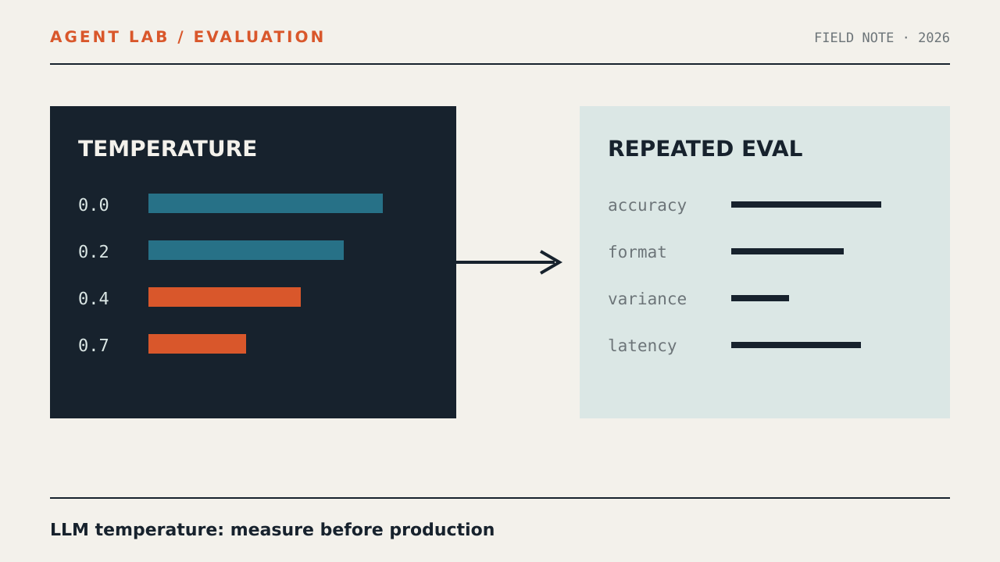

PRACTICE / AGENT LAB
Как подобрать температуру LLM с помощью повторяемого eval-теста: llm evaluation

Этот практический материал описывает температуру модели часто выбирают интуитивно, не измеряя стабильность, точность и разброс ответов в условиях будущего продакшена. и задаёт воспроизводимый тест по теме «llm evaluation» без неподтверждённых обещаний результата.
Граница теста
Проверяем только сценарий: температуру модели часто выбирают интуитивно, не измеряя стабильность, точность и разброс ответов в условиях будущего продакшена.. Материал не утверждает готовность контура к production.
Минимальный сценарий
Зафиксируйте входные данные, настройки модели и критерий приёмки. Ожидаемый результат: Таблица результатов для температур 0, 0.2, 0.4 и 0.7 и обоснованная конфигурация для выбранной задачи.. Каждому прогону присвойте стабильный идентификатор.
Проверка
Повторите тест на одинаковом наборе, сохраните измерения и сравните их с критерием. Не подменяйте измеренные данные выводом модели.
Ограничения
Это воспроизводимый учебный сценарий, а не сертификация безопасности и не гарантия поведения в production.
Related measurements
Материал использует измеренные запросы: llm evaluation, AI агент. Он не обещает поискового результата.